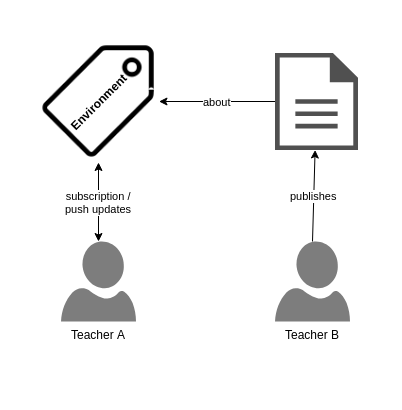

SkoHub –
KOS-based content syndication
Adrian Pohl /
@acka47
Linked
Open Data, Hochschulbibliothekszentrum NRW (hbz)

Köln, 2019-05-29
Diese Präsentation:
http://slides.lobid.org/skohub-hbz/

Open is the new normal
The goal of openness
To establish a practice where scientific, educational or other cultural resources are by default published under an open license on the web to be read, used, remixed and shared by anybody.
There are lots of openness initiatives
Open Access & Open Science
Free Culture
Open Data
Open Educational Resources
...
So we've got a lot of open stuff on the web
...but how do we discover what is relevant to us?
The challenge
With a growing supply of resources on the web, the challenge grows to learn about or find resources relevant for your teaching, studies, or research.
The repository approach
Maintenance burden
Create and maintain a list of sources (repos) to add
Watch out for new resources to be added
Adjusting the crawlers when interfaces change
Normalize data from different sources
Shortcomings of the repo approach
Only cover resources in repos, not elsewhere on the web
Users have to know where to find your service to start searching
The approach is "off the web"
Off the web
Conceptually, we have come to see [OAI-PMH] as repository-centric instead of resource-centric or web-centric. It has its starting point in the repository, which is considered to be the center of the universe. Interoperability is framed in terms of the repository, rather than in terms of the web and its primitives. This kind of repository, although it resides on the web, hinders seamless access to its content because it does not fully embrace the ways of the web.– Van de Sompel/Nelson 2015
How could a web-centric or resource-centric approach to discovery by subject look like?
URIs, URIs, URIs
URIs for open resources and controlled vocabularies

Web-based subscription and notification
(with ActivityPub)
An inbox for ervery subject

Applications can send notifications to the inbox
Applications subscribe to an inbox and will receive push notifications

The described infrastructure allows applications:
to send a notification to a subject’s inbox containing information about and a link to new content about this subject
to subscribe to the inbox of a subject from a knowledge organization system in order to receive push updates about new content in real time.
Example
Advantages
Push instead of pull
Supporting web-wide publications
Knowledge organization systems are used to their full potential
Encouraging creation and use of shared Knowledge Organization Systems across applications
Incentive for content producers to add machine-readable descriptions
SkoHub project (2019)
Basic inbox and subscription infrastructure (skohub-pubsub)
Static site generator for Simple Knowledge Organization Systems (skohub-ssg)
Describe, link resources & send notifications from the browser (skohub-editor)
Browser-based subscription to subjects (skohub-deck)